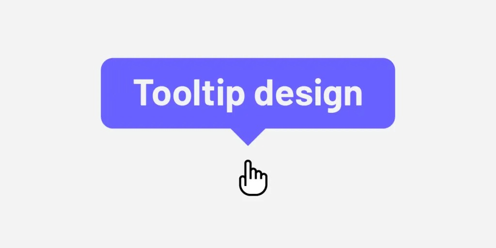

Cosa sono i tooltips
I tooltips sono piccoli elementi informativi che appaiono quando l’utente interagisce con un componente dell’interfaccia, solitamente per fornire chiarimenti o dettagli aggiuntivi senza ingombrare lo spazio visivo. Nelle versioni desktop, i tooltip vengono attivati comunemente tramite il passaggio del mouse (hover), offrendo un’interazione discreta e contestuale.
Tuttavia, questa modalità non è direttamente trasferibile ai dispositivi mobili, dove l’hover non esiste e le interazioni si basano sul tocco (tap). Questo cambiamento comporta problemi di usabilità, visibilità e accessibilità: i tooltip rischiano di essere attivati in modo non intenzionale o, al contrario, di non essere mai scoperti. Inoltre, lo spazio ridotto degli schermi mobili richiede soluzioni più progettate e adattive, come trasformare i tooltip in popover persistenti o modali semplificati.
Questa differenza di paradigma rende la conversione desktop-mobile dei tooltip una sfida cruciale per chi progetta interfacce responsive ed inclusive.
